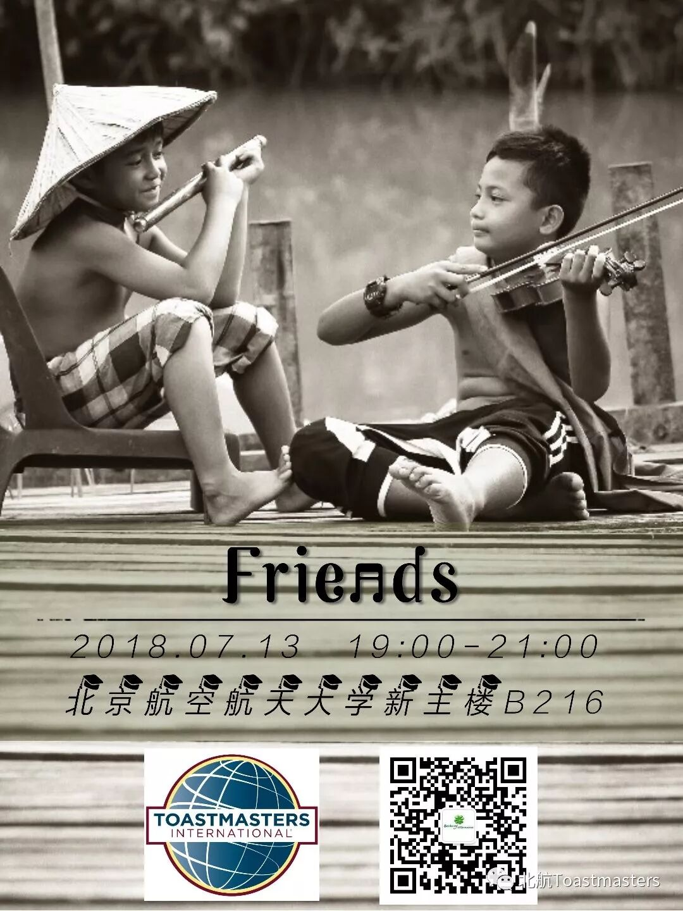
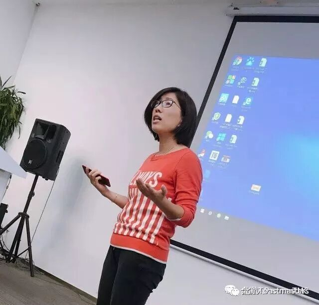
TM- PartnerTMC President Super Aileen
[T T S]
———————Table Topic——————
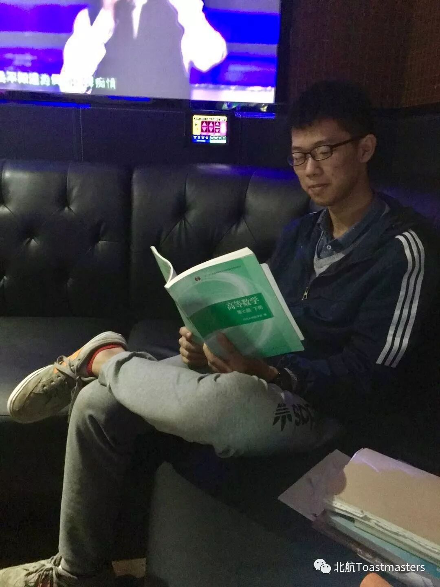
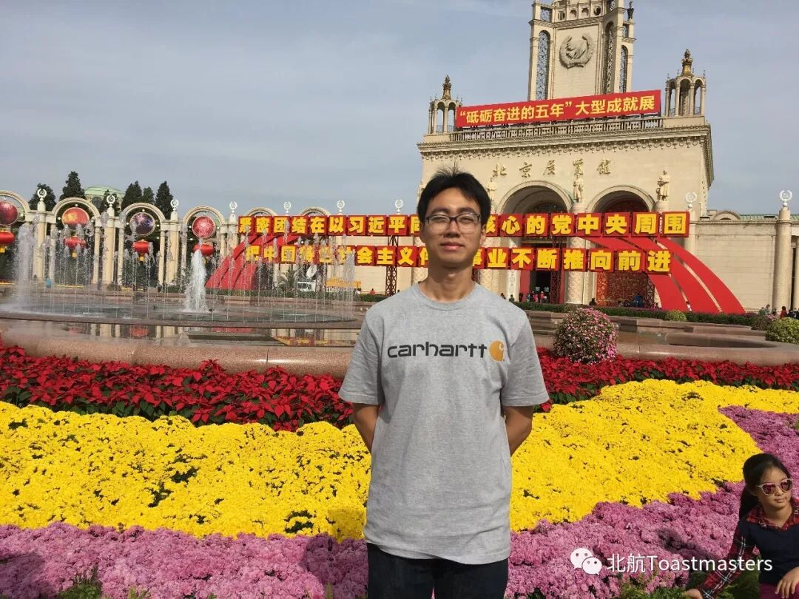
TTM: Justin
TTE: Arthur
[PSS]
—————Prepared Speech—————
#L1-P3-3rd speech:
How can the machine recognize your speech#
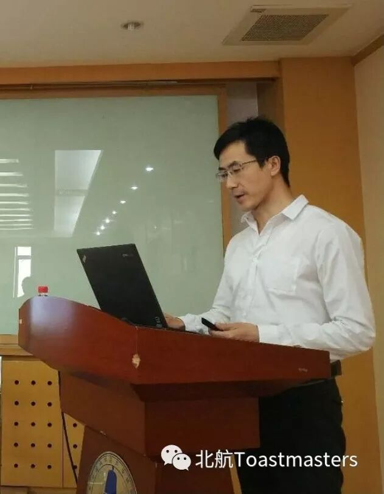
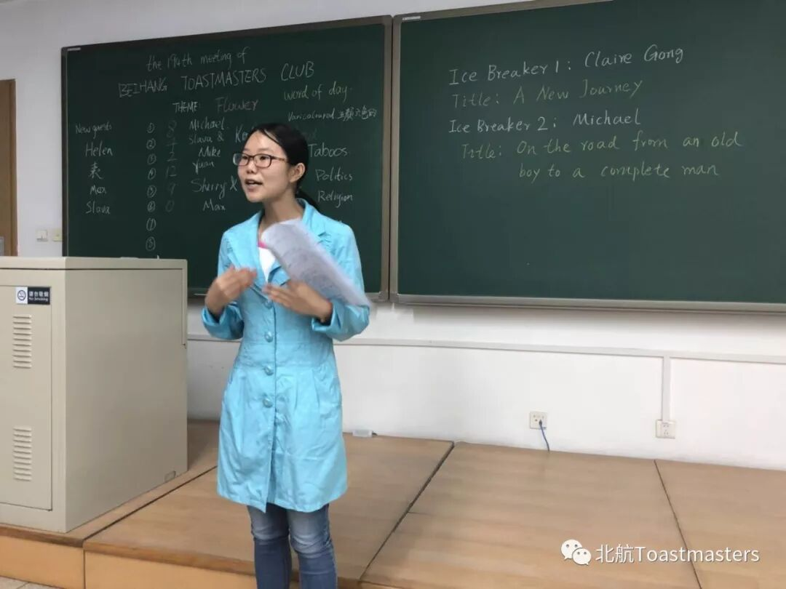
Speaker 1——MichaelEvaluator 1——Joy
#L1-P2-1st speech: TBD#
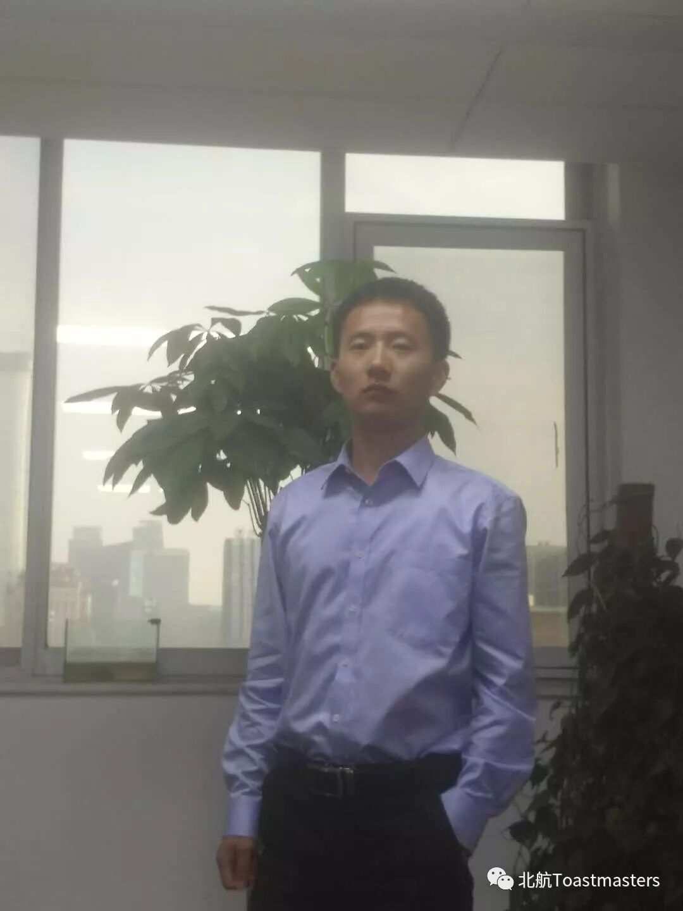
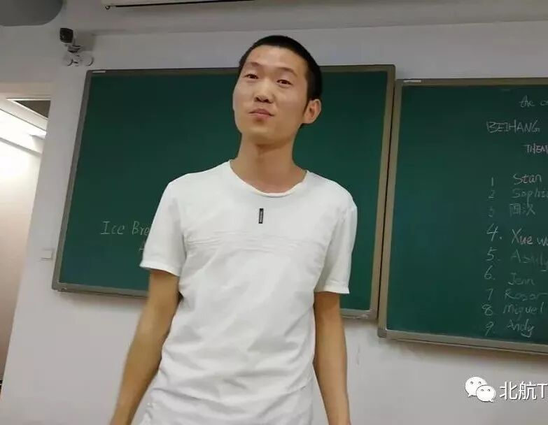
Speaker 2——Allen
Evaluator 2——Kaisense
L1-P1-1st speech: Chinese Tea
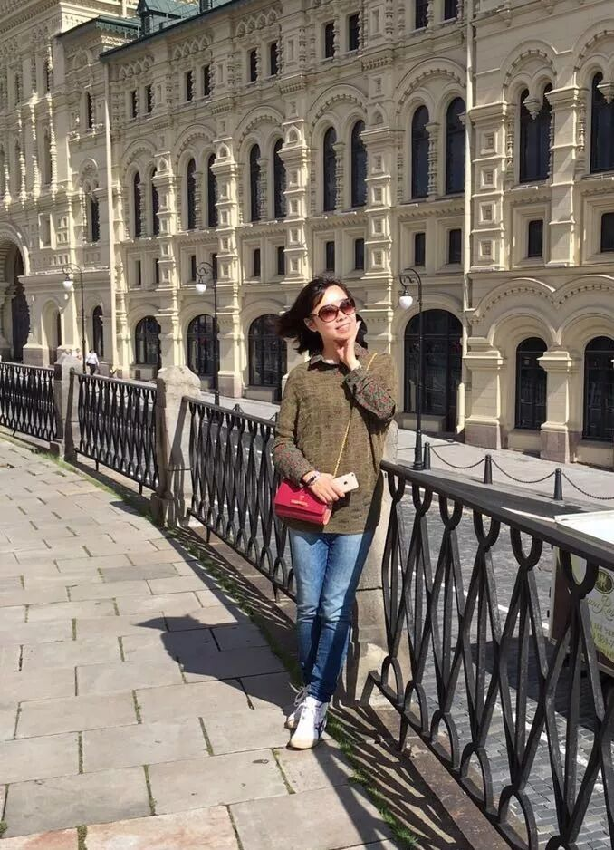
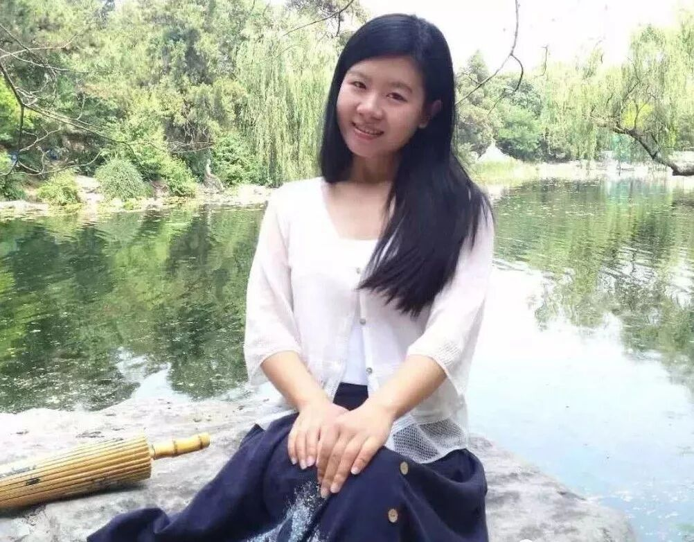
Speaker 3——ClaireEvaluator 4——Lily
L1-P1-1st：TBD
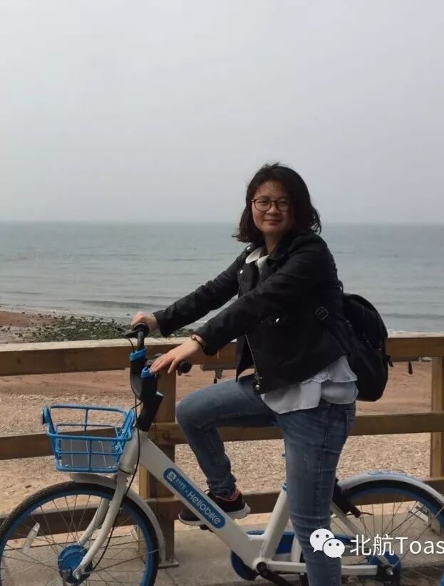
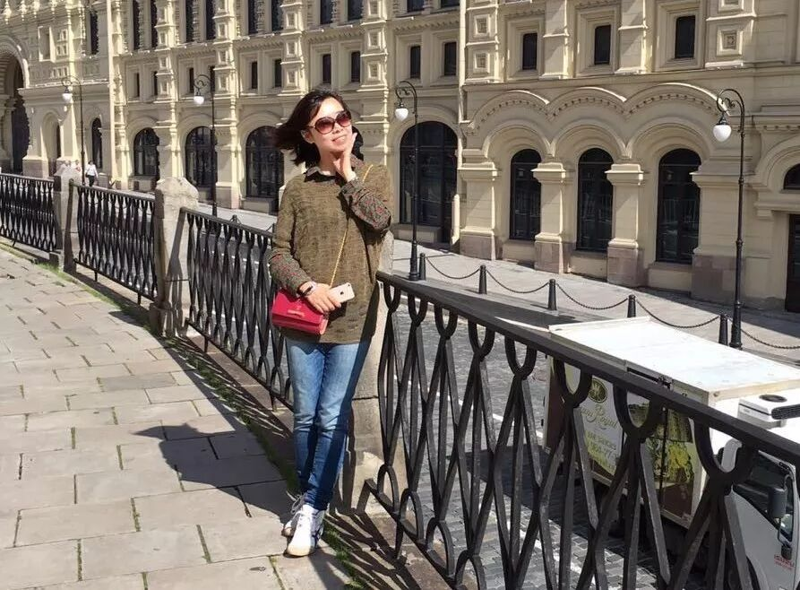
Speaker 4——Annie
Evaluator 4——Claire
————Evaluation Team————
General Evaluator: Cyril
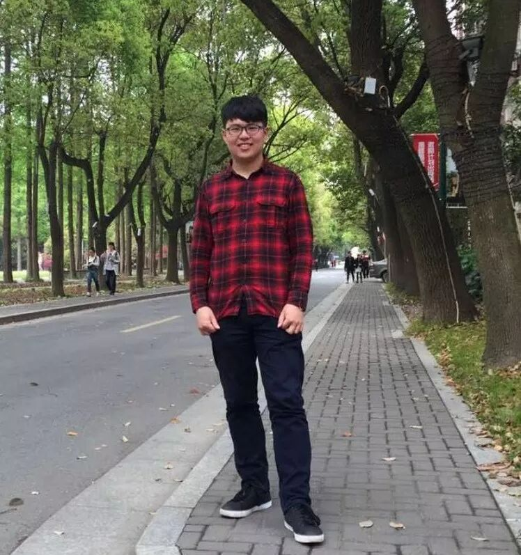
Timer: Sun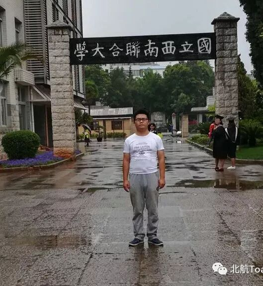
Ah-Counter: Kaisense
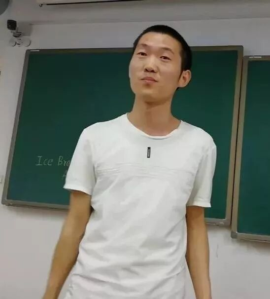
Grammarian: Wincher
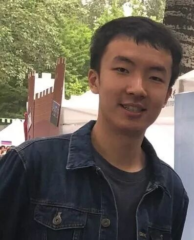
Quizmaster-Michael
Time: 19:00-21:00, Friday, 13th July
Venue: Room B216, New Main Building, Beihang University

BeihangToastmasters Club is a students' union. At the same time, we belong to a non-profit international organization calledToastmasters International.
Toastmasters International (TI) is a non-profit educational organization that operates clubs worldwide for the purpose of helping members improve their communication, public speaking, and leadership skills.You can find us by the following map of Beihang University.

https://mp.weixin.qq.com/s/rnqd5ma7uJjHoYo8ZRqvVQ
本页为抢救式本地归档，图文已永久保存。